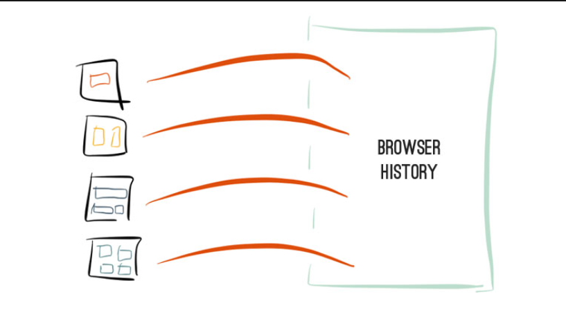
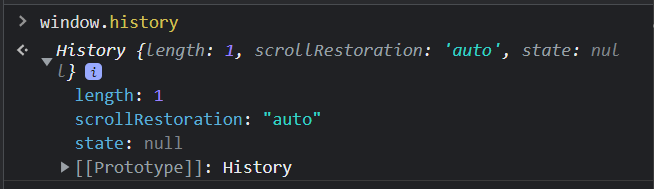

What is it and why is it needed?
Originally web applications consisted in interconnected html documents
SPAs are based on a single document model. Web applications' lifespan happens on a single html page, along with the transitions between the different views.
Client-side routing is a type of routing where users navigate through an application without completely reloading the page even if the page's URL changes, instead displaying new content.
forexample.com/
forexample.com/about
forexample.com/search
History API - allows you to walk through the history of the page, add items to the history, respond to history transitions and other usefulness.
The History API relies on one DOM interface, the History object.
Each tab has a unique History object, which resides in window.history.
The History length property in HTML is used to return the count of URLs in the history list of the current browser window.
window.history.length // 1-50
It returns a numeric value that represents the number of entries in the session history.
The History.state property returns a value representing the state at the top of the history stack.
The state at the top of the history stack. The value is null until the pushState() or replaceState() method is used.
window.history.state
The scrollRestoration property of History interface allows web applications to explicitly set default scroll restoration behavior on history navigation.
window.history.scrollRestoration
The History.go() method loads a specific page from the session history. You can use it to move forwards and backwards through the history depending on the value of a parameter.
window.history.go()
window.history.go(delta)
The position in the history to which you want to move, relative to the current page. A negative value moves backwards, a positive value moves forwards.
history.go(2) moves forward two pages and history.go(-2) moves back two pages. If no value is passed or if delta equals 0, it has the same result as calling location.reload().
The History.back() method causes the browser to move back one page in the session history.
It has the same effect as calling history.go(-1). If there is no previous page, this method call does nothing.
window.history.back()
The History.forward() method causes the browser to move forward one page in the session history. It has the same effect as calling history.go(1).
window.history.forward()
In an HTML document, the history.pushState() method adds an entry to the browser's session history stack.
window.history.pushState(state, unused, url)
window.history.pushState({}, '' '/url')
The History.replaceState() method modifies the current history entry, replacing it with the state object and URL passed in the method parameters.
window.history.replaceState(state, unused)
window.history.replaceState(state, unused, url)
The popstate event is fired when the active history entry changes as the user navigates through the session's history.
addEventListener('popstate', (event) => { });
onpopstate = (event) => { };
Event properties:
PopStateEvent.state (read only) - Returns a copy of the information that was provided to pushState() or replaceState().
Note that simply calling history.pushState() or history.replaceState() will not fire a popstate event. The popstate event will be triggered by a browser action, such as pressing the back or forward button (or calling history.back() or history.forward()).